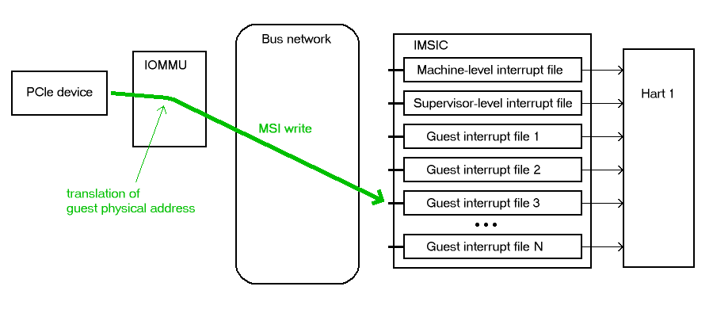
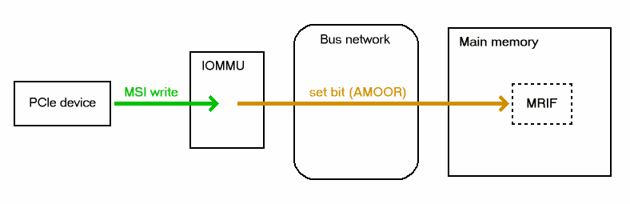

8.1. IOMMU Support for MSIs to Virtual Machines
8.1. IOMMU Support for MSIs to Virtual Machines
The existence of an IOMMU in a system makes it possible for a guest operating system, running in a virtual machine, to be given direct control of an I/O device with only minimal hypervisor intervention. A guest OS with direct control of a device will program the device with guest physical addresses, because that is all the OS knows. When the device then performs memory accesses using those addresses, an IOMMU is responsible for translating those guest physical addresses into machine physical addresses, referencing address-translation data structures supplied by the hypervisor.
To handle MSIs from a device controlled by a guest OS, an IOMMU must be able to redirect those MSIs to a guest interrupt file in an IMSIC. Systems that do not have IMSICs with guest interrupt files do not need to implement the facilities described in this chapter.
Because MSIs from devices are simply memory writes, they would naturally be subject to the same address translation that an IOMMU applies to other memory writes. However, the Advanced Interrupt Architecture requires that IOMMUs treat MSIs directed to virtual machines specially, in part to simplify software, and in part to allow optional support for memory-resident interrupt files.
This chapter uses the term IOMMU in a generic sense that encompasses all translation and transaction processing services required to virtualize device accesses and is concerned only with how an IOMMU recognizes and processes MSIs directed to virtual machines. Most other functions and details of an IOMMU are beyond the scope of this standard, and must be specified elsewhere.
|
The RISC-V IOMMU Architecture Specification provides a detailed description of the IOMMU architecture, dividing translation and transaction processing functionality into blocks such as IOMMU, IO Bridge, etc. and describing how those blocks are integrated into a system. |
If a single physical I/O device can be subdivided for control by multiple separate device drivers, each sub-device is referred to here as one device.
8.1.1. Device contexts at an IOMMU
The following assumptions are made about the IOMMUs in a system:
-
For each I/O device connected to the system through an IOMMU, software can configure at the IOMMU a device context, which associates with the device a specific virtual address space and any other per-device parameters the IOMMU may support. By giving devices each their own separate device context at an IOMMU, each device can be individually configured for a separate operating system, which may be a guest OS or the main (host) OS. On every memory access initiated by a device, hardware indicates to the IOMMU the originating device by some form of unique device identifier, which the IOMMU uses to locate the appropriate device context within data structures supplied by software. For PCI, for example, the originating device may be identified by the unique triple of PCI bus number, device number, and function number.
-
An IOMMU optionally translates the addresses of a device’s memory accesses using address-translation data structures—typically page tables—specified by software via the corresponding device context. The smallest granularity of address translation implemented by all IOMMUs is not larger than a 4-KiB page, matching that of standard RISC-V address-translation page tables. (An IOMMU may in fact employ page tables in the same format as the page-based address translation defined by the RISC-V Privileged Architecture, but this is not required.)
The Advanced Interrupt Architecture adds to device contexts these fields, as needed:
-
an MSI address mask and address pattern, used together to identify pages in the guest physical address space that are the destinations of MSIs; and
-
the real physical address of an MSI page table for controlling the translation and/or conversion of MSIs from the device.
The MSI address mask and address pattern are each unsigned integers with the same width as guest physical page numbers, i.e., 12 bits narrower than the maximum supported width of a guest physical address. Their use is explained in 8.1.4. Identification of page addresses of a VM’s interrupt files.
A device context’s MSI page table is separate from the usual address-translation data structures used to translate other memory accesses from the same device. The form and function of MSI page tables are the subject of most of the rest of this chapter.
|
A device context is given an independent page table for MSIs for two reasons: First, hypervisors running under Linux or a similar OS can benefit from separate control of MSI translations to help simplify the case when virtual harts are migrated from one physical hart to another. As noted in [virtHartMigration], when a virtual hart’s interrupt files are mapped to guest interrupt files in the real machine, migration of the virtual hart causes the physical guest interrupt files underlying those virtual interrupt files to change. However, because on other systems (not RISC-V) the migration of a virtual hart does not affect the mapping from guest physical addresses to real physical addresses, the internal functions of Linux that perform this migration are not set up to modify an IOMMU’s address-translation tables to adjust for the changing physical locations of RISC-V virtual interrupt files. Giving a hypervisor control of a separate MSI translation table at an IOMMU bypasses this limitation. The MSI page table can be modified at will by the hypervisor and/or by the subsystem that manages interrupts without coordinating with the many other OS components concerned with regular address translation. Second, specifying a separate MSI page table facilitates the use of memory-resident interrupt files (MRIFs), which are introduced in 8.1.3. Memory-resident interrupt files. A dedicated MSI page table can easily support a special table entry format for MRIFs (8.1.5.2. MSI PTE, MRIF mode) that would be entirely foreign and difficult to retrofit to any other address-translation data structures. |
8.1.2. Translation of addresses for MSIs from devices
To support the delivery of MSIs from I/O devices directly to RISC-V virtual machines without hypervisor intervention, an IOMMU must be able to translate the guest physical address of an MSI to the real physical address of an IMSIC’s guest interrupt file in the machine, as illustrated in Figure 1. This address translation is controlled by the MSI page table configured in the appropriate device context at the IOMMU. Because every interrupt file, real or virtual, occupies a naturally aligned 4-KiB page of address space, the required address translation is from a virtual (guest) page address to a physical page address, the same as supported by regular RISC-V page-based address translation.

Memory writes from a device are recognized as MSIs by the destination address of the write. If an IOMMU determines that a 32-bit write is to the location of a (virtual) interrupt file in the relevant virtual machine, the write is considered an MSI within the VM, else not. The exact formula for recognizing MSIs is documented in 8.1.4. Identification of page addresses of a VM’s interrupt files.
|
Although the translation of MSIs is controlled by its own separate page table, the fact that MSI translations are at the same page granularity as regular RISC-V address translations implies that an address translation cache within an IOMMU requires little modification to also cache MSI translations. Only on a translation cache miss does the IOMMU need to treat MSIs significantly differently than other memory accesses from the same device, to choose the correct translation table and to access and interpret the table properly. |
8.1.3. Memory-resident interrupt files
An IOMMU may optionally support memory-resident interrupt files (MRIFs). If implemented, the use of memory-resident interrupt files can greatly increase the number of virtual harts that can be given direct control of one or more physical devices in a system, assuming the rest of the system can still handle the added load.
Without memory-resident interrupt files, the number of virtual RISC-V harts that can directly receive MSIs from devices is limited by the total number of guest interrupt files implemented by all IMSICs in the system, because all MSIs to RISC-V harts must go through IMSICs. For a single RISC-V hart, the number of guest interrupt files is the GEILEN parameter defined by the H extension, which can be at most 31 for RV32 and 63 for RV64.
With the use of memory-resident interrupt files, on the other hand, the total number of virtual RISC-V harts able to receive device MSIs is almost unbounded, constrained only by the amount of real physical memory and the additional processing time needed to handle them. As its name implies, a memory-resident interrupt file is located in memory instead of within an IMSIC. Figure 2 depicts how an IOMMU can record an incoming MSI in an MRIF. When properly configured by a hypervisor, an IOMMU recognizes certain incoming MSIs as intended for a specific virtual interrupt file, and records each such MSI by setting an interrupt-pending bit stored within the MRIF data structure in ordinary memory. After each MSI is recorded in an MRIF, the IOMMU also sends a notice MSI to the hypervisor to inform it that the MRIF contents may have changed.

While a memory-resident interrupt file provides a place to record MSIs, it cannot interrupt a hart directly the way an IMSIC’s guest interrupt files can. The notice MSIs that hypervisors receive only indicate that a virtual hart might need interrupting; a hypervisor is responsible for examining the MRIF contents each time to determine whether actually to interrupt the virtual hart. Furthermore, whereas an IMSIC’s guest interrupt file can directly act as a supervisor-level interrupt file for a virtual hart, keeping a virtual hart’s interrupt file in an MRIF while the virtual hart executes requires that the hypervisor emulate a supervisor-level interrupt file for the virtual hart, hiding the underlying MRIF. Depending on how often the virtual hart touches its interrupt file and the implementation’s level of support for MRIFs, the cost of this emulation may be significant.
Consequently, MRIFs are expected most often to be used for virtual harts that are more-or-less "swapped out" of a physical hart due to being idle, or nearly so. When a hypervisor determines that an MSI that landed in an MRIF should wake up a particular virtual hart that was idle, the virtual hart can be assigned a guest interrupt file in an IMSIC and its interrupt file moved from the MRIF into this guest interrupt file before the virtual hart is resumed. The process of allocating a guest interrupt file for the newly wakened virtual hart may of course force the interrupt file of another virtual hart to be evicted to its own MRIF.
|
Not all systems need to accommodate large numbers of idle virtual harts. Many batch-processing servers, for example, strive to keep all virtual worker threads as busy as possible from start to finish, throttled only by I/O delays and limits on processing resources. In such environments, support for MRIFs may not be useful, so long as parameter GEILEN is not too small. |
An IOMMU can have one of these three levels of support for memory-resident interrupt files:
-
no memory-resident interrupt files;
-
memory-resident interrupt files without atomic update; or
-
memory-resident interrupt files with atomic update.
Memory-resident interrupt files are most efficient when the memory system supports logical atomic memory operations (AMOs) corresponding to RISC-V instructions AMOAND and AMOOR, for memory accesses made both from harts and from the IOMMU. The AMOAND and AMOOR operations are required for atomic update of a memory-resident interrupt file. A reduced level of support is possible without AMOs, relying solely on basic memory reads and writes.
8.1.3.1. Format of a memory-resident interrupt file
A memory-resident interrupt file occupies 512 bytes of memory, naturally aligned to a 512-byte address boundary. The 512 bytes are organized as an array of 32 pairs of 64-bit doublewords, 64 doublewords in all. Each doubleword is in little-endian byte order (even for systems where all harts are big-endian-only).
|
Big-endian-configured harts that make use of MRIFs are expected to implement the REV8 byte-reversal instruction defined by standard RISC-V extension Zbb, or pay the cost of endianness conversion using a sequence of instructions. |
The pairs of doublewords contain the interrupt-pending and interrupt-enable bits for external interrupt identities 1-2047, in this arrangement:
|
|
|
|
|
|
|
|
|
|
|
|
|
|
|
|
|
|
|
|
|
|
|
|
In general, the pair of doublewords at address offsets and for integer contain the interrupt-pending and interrupt-enable bits for external interrupt minor identities in the range to . For identity in this range, bit of the first (even) doubleword is the interrupt-pending bit, and the same bit of the second (odd) doubleword is the interrupt-enable bit.
|
The interrupt-pending and interrupt-enable bits are stored interleaved by doublewords within an MRIF to facilitate the possibility of an IOMMU examining the relevant enable bit to determine whether to send a notice MSI after updating a pending bit, rather than the default behavior of always sending a notice MSI after an update without regard for the interrupt-enable bits. The memory arrangement matters only when MRIFs are supported without atomic update. |
Bit 0 of the first doubleword of an MRIF stores a faux interrupt-pending bit for nonexistent interrupt 0. If a write from an I/O device appears to be an MSI that should be stored in an MRIF, yet the data to write (the interrupt identity) is zero, the IOMMU acts as though zero were a valid interrupt identity, setting bit 0 of the target MRIF’s first doubleword and sending a notice MSI as usual.
All MRIFs are the size to accommodate 2047 valid interrupt identities, the maximum allowed for an IMSIC interrupt file. If a system’s actual IMSICs have interrupt files that implement only interrupt identities, , then the contents of MRIFs for identities greater than may be ignored by software. IOMMUs, however, treat every MRIF as though all interrupt identities in the range 0-2047 are valid, even as software ignores invalid identity 0 and all identities greater than .
|
There is no need to specify to an IOMMU a desired size for an MRIF smaller than 2047 valid interrupt identities. The only use an IOMMU would make of this information would be to discard any MSIs indicating an interrupt identity greater than . If devices are properly configured by software, such errant MSIs should not occur; but even if they do, it is just as effective for software to ignore spurious interrupt identities after they have been recorded in an MRIF as for an IOMMU to discard them before recording them in the MRIF. It is likewise unnecessary for IOMMUs to check for and discard MSIs indicating an invalid interrupt identity of zero. |
8.1.3.2. Recording of incoming MSIs to memory-resident interrupt files
The data component of an MSI write specifies the interrupt identity to
raise in the destination interrupt file. (Recall
MSI encoding.) This data may be in
little-endian or big-endian byte order. If an IOMMU supports
memory-resident interrupt files, it can store to an MRIF MSIs of the
same endianness that the machine’s IMSICs accept. All IMSIC interrupt
files are required to accept MSIs in little-endian byte order written to
memory-mapped register seteipnum_le (Memory region for an interrupt file). IMSIC interrupt
files may also accept MSIs in big-endian byte order if register seteipnum_be is
implemented alongside seteipnum_le.
If the interrupt identity indicated by an MSI’s data (when interpreted in the correct byte order) is in the range 0-2047, an IOMMU stores the MSI to an MRIF by setting to one the interrupt-pending bit in the MRIF for that identity. If atomic update is supported for MRIFs, the pending bit is set using an AMOOR operation, else it is set using a non-atomic read-modify-write sequence. After the interrupt-pending bit is set in the MRIF, the IOMMU sends the notice MSI that software has configured for the MRIF.
The exact process of storing an MSI to an MRIF is specified more precisely in 8.1.5.2. MSI PTE, MRIF mode, which covers MSI page table entries configured in MRIF mode.
|
It is an open question whether an IOMMU might optionally examine the matching interrupt-enable bit within a destination MRIF to decide whether to send a notice MSI after setting an interrupt-pending bit. Currently, an IOMMU is required always to send a notice MSI after storing an MSI to an MRIF, even when the corresponding enable bit for the interrupt identity is zero. |
8.1.3.3. Use of memory-resident interrupt files with atomic update
To make use of a memory-resident interrupt file with support for atomic
update, software must have memory locations to save an IMSIC interrupt
file’s eidelivery and eithreshold registers, in addition to the MRIF structure itself from 8.1.3.1. Format of a memory-resident interrupt file.
Moving a virtual hart’s interrupt file from an IMSIC into an MRIF involves these steps:
-
Prepare the MRIF by zeroing all of its interrupt-pending bits (the even doublewords) and by copying the IMSIC interrupt file’s
eiearray to the MRIF’s interrupt-enable bits (the odd doublewords). -
Save to memory the existing values of the IMSIC interrupt file’s registers
eideliveryandeithreshold, and seteidelivery= 0. -
Modify all relevant translation tables at IOMMUs so that MSIs for this virtual interrupt file are now stored in the MRIF. If necessary, synchronize with all IOMMUs to ensure that no straggler MSIs will arrive at the IMSIC interrupt file after this step.
-
Logically OR the contents of the IMSIC interrupt file’s
eiparray into the interrupt-pending bits of the MRIF, using AMOOR operations.
Once this sequence is complete, the IMSIC interrupt file is no longer in use.
Each time a notice MSI arrives indicating that an MSI has been stored in the MRIF, the controlling hypervisor should scan the MRIF’s interrupt-pending and interrupt-enable bits to determine if any enabled interrupt is now both pending and enabled and thus should interrupt the virtual hart.
With atomic update of MRIFs, a virtual hart may continue executing with its interrupt file contained in an MRIF, so long as the hypervisor emulates for the virtual hart a proper IMSIC interrupt file to hide the underlying MRIF. Hypervisor software can safely set and clear the interrupt-pending and interrupt-enable bits of the MRIF using AMOOR and AMOAND operations, even as an IOMMU may be storing incoming MSIs into the same MRIF.
|
If an IOMMU is ever configured to examine an MRIF’s interrupt-enable bits to decide whether to send notice MSIs, then modifying those enable bits will generally require coordination with the IOMMU. But so long as IOMMUs ignore the interrupt-enable bits as is currently assumed, the bits can be changed by software without risk. |
To move the same interrupt file from the MRIF back to an IMSIC:
-
At the new IMSIC interrupt file, set
eidelivery= 0, and zero theeiparray. -
Modify all relevant translation tables at IOMMUs so that MSIs for this virtual interrupt file are now sent to the IMSIC interrupt file. If necessary, synchronize with all IOMMUs to ensure that no straggler MSIs will be stored in the MRIF after this step.
-
Logically OR the interrupt-pending bits from the MRIF into the IMSIC interrupt file, using instruction CSRS to write to the
eiparray. Also, copy the interrupt-enable bits from the MRIF to the IMSIC interrupt file’seiearray. -
Load the IMSIC interrupt file’s registers
eithresholdandeideliverywith the values that were earlier saved.
8.1.3.4. Use of memory-resident interrupt files without atomic update
Without support for atomic update, the use of memory-resident interrupt files is similar to the atomic-update case of the previous subsection, but with some added complexities.
First, if the I/O devices that a virtual hart controls are behind
multiple IOMMUs, then multiple MRIF structures are needed, one per
IOMMU, not just a single MRIF structure. Furthermore, in addition to
locations for storing eidelivery and eithreshold, software needs a place for a complete copy
of the interrupt file’s implemented eip array, apart from the MRIFs. While a
virtual interrupt file is in memory, its interrupt-pending bits will be
split across all the MRIFs and the saved eip array. The interrupt-enable
bits may exist only in the MRIFs.
To move a virtual hart’s interrupt file from an IMSIC into memory, with one MRIF per IOMMU:
-
Prepare all MRIFs by zeroing their interrupt-pending bits (the even doublewords) and by copying the IMSIC interrupt file’s
eiearray to the MRIFs' interrupt-enable bits (the odd doublewords). -
Save to memory the existing values of the IMSIC interrupt file’s registers
eideliveryandeithreshold, and seteidelivery= 0. -
At each IOMMU, modify all relevant translation tables so that MSIs for this virtual interrupt file are now stored in the individual MRIF matched to the IOMMU. If necessary, synchronize with all IOMMUs to ensure that no straggler MSIs will arrive at the IMSIC interrupt file after this step.
-
Dump the IMSIC interrupt file’s
eiparray to its separate location outside the MRIFs.
Once this sequence is complete, the IMSIC interrupt file is no longer in use.
While a virtual hart’s interrupt file remains in memory, an interrupt
identity’s true pending bit is the logical OR of its bit in all MRIFs
and its bit in the saved eip array. All pending bits in the MRIFs start as
zeros, but interrupts may become pending there as MSIs for this virtual
hart arrive at IOMMUs and are stored in the corresponding MRIFs.
Without atomic update of MRIFs, an interrupt-pending bit is not easily cleared in an MRIF. (Clearing a single pending bit in one MRIF requires that a new MRIF be allocated and initialized and the corresponding IOMMU reconfigured to store MSIs into the new MRIF.) For this reason, it may or may not be practical to have a virtual hart execute while keeping one of its interrupt files in memory. When an MRIF records an interrupt that should wake a virtual hart, the simplest strategy is to always move the interrupt file back into an IMSIC’s guest interrupt file before resuming execution of the virtual hart.
To transfer an interrupt file from memory back to an IMSIC:
-
At the new IMSIC interrupt file, set
eidelivery= 0, and zero theeiparray. -
Modify all relevant translation tables at IOMMUs so that MSIs for this virtual interrupt file are now sent to the IMSIC interrupt file. If necessary, synchronize with all IOMMUs to ensure that no straggler MSIs will be stored in MRIFs after this step.
-
Merge by bitwise logical OR the interrupt-pending bits of all MRIFs and the saved
eiparray, and logically OR these merged bits into the IMSIC interrupt file, using instruction CSRS to write to theeiparray. Also, copy the interrupt-enable bits from one of the MRIFs to the IMSIC interrupt file’seiearray. -
Load the IMSIC interrupt file’s registers
eithresholdandeideliverywith the values that were earlier saved.
8.1.3.5. Allocation of guest interrupt files for receiving notice MSIs
The processing a hypervisor does in response to notice MSIs can be minimized by assigning a separate interrupt identity for each MRIF, so the identity encoded in a notice MSI always indicates which one MRIF may have changed. However, if there are very many MRIFs (potentially in the thousands), a hypervisor may run short of interrupt identities within the supervisor-level interrupt files available in IMSICs. In that case, the hypervisor can increase its supply of interrupt identities by allocating one or more of the IMSICs’ guest interrupt files to itself for the purpose of receiving notice MSIs.
|
Although guest interrupt files exist primarily to act as supervisor-level interrupt files for virtual harts, the IMSIC hardware does not police exactly how they are used by software. |
8.1.4. Identification of page addresses of a VM’s interrupt files
When an I/O device is configured directly by a guest operating system, MSIs from the device are expected to be targeted to virtual IMSICs within the guest OS’s virtual machine, using guest physical addresses that are inappropriate and unsafe for the real machine. An IOMMU must recognize certain incoming writes from such devices as MSIs and convert them as needed for the real machine. (Recall Figure 1.)
MSIs originating from a single device that require conversion are expected to have been configured at the device by a single guest OS running within one RISC-V virtual machine. Assuming the VM itself conforms to the Advanced Interrupt Architecture, MSIs are sent to virtual harts within the VM by writing to the memory-mapped registers of the interrupt files of virtual IMSICs. Each of these virtual interrupt files occupies a separate 4-KiB page in the VM’s guest physical address space, the same as real interrupt files do in a real machine’s physical address space. A write to a guest physical address can thus be recognized as an MSI to a virtual hart if the write is to a page occupied by an interrupt file of a virtual IMSIC within the VM.
The MSI address mask and address pattern specified in a device context (8.1.1. Device contexts at an IOMMU) are used to identify the 4-KiB pages of virtual interrupt files in the guest physical address space of the relevant VM. An incoming 32-bit write made by a device is recognized as an MSI write to a virtual interrupt file if the destination guest physical page matches the supplied address pattern in all bit positions that are zeros in the supplied address mask. In detail, a memory access to guest physical address is an access to a virtual interrupt file’s memory-mapped page if
((A >> 12) & ~address mask) = (address pattern & ~address mask)
where >> 12 represents shifting right by 12 bits, an ampersand (&) represents bitwise logical AND, and "~address mask" is the bitwise logical complement of the address mask.
When a memory access is found to be to a virtual interrupt file, an interrupt file number is extracted from the original guest physical address as
interrupt file number = extract(A >> 12, address mask)
Here, extract( , ) is a "bit extract" that discards all bits from whose matching bits in the same positions in the mask are zeros, and packs the remaining bits from contiguously at the least-significant end of the result, keeping the same bit order as and filling any other bits at the most-significant end of the result with zeros. For example, if the bits of and are
= a b c d e f g h
= 1 0 1 0 0 1 1 0
then the value of extract( , ) has bits 0 0 0 0 a c f g.
8.1.5. MSI page tables
When an IOMMU determines that a memory access is to a virtual interrupt file as specified in the previous section, the access is translated or converted by consulting the MSI page table configured for the device, instead of using the regular translation data structures that apply to all other memory accesses from the same device.
An MSI page table is a flat array of MSI page table entries (MSI PTEs), each 16 bytes. MSI page tables have no multi-level hierarchy like regular RISC-V page tables do. Rather, every MSI PTE is a leaf entry specifying the translation or conversion of accesses made to a particular 4-KiB guest physical page that a virtual interrupt file occupies (or may occupy) in the relevant virtual machine. To select an individual MSI PTE from an MSI page table, the PTE array is indexed by the interrupt file number extracted from the destination guest physical address of the incoming memory access by the formula of the previous section. Each MSI PTE may specify either the address of a real guest interrupt file that substitutes for the targeted virtual interrupt file (as in Figure 1), or a memory-resident interrupt file in which to store incoming MSIs for the virtual interrupt file (as in Figure 2).
The number of entries in an MSI page table is where is the number of bits that are ones in the MSI address mask used to extract the interrupt file number from the destination guest physical address. If an MSI page table has 256 or fewer entries, the start of the table is aligned to a 4-KiB page address in real physical memory. If an MSI page table has entries, the table must be naturally aligned to a address boundary. If an MSI page table is not aligned as required, all entries in the table appear to an IOMMU as UNSPECIFED, and any address an IOMMU may compute and use for reading an individual MSI PTE from the table is also UNSPECIFIED.
Every 16-byte MSI PTE is interpreted as two 64-bit doublewords. If an IOMMU also references standard RISC-V page tables, defined by the RISC-V Privileged Architecture, for regular address translation, then the byte order for each of the two doublewords in memory, little-endian or big-endian, should be the same as the endianness of the regular RISC-V page tables configured for the same device context. Otherwise, the endianness of the doublewords of an MSI PTE is implementation-defined.
Bit 0 of the first doubleword of an MSI PTE is field V (Valid). When V = 0, the PTE is invalid, and all other bits of both doublewords are ignored by an IOMMU, making them free for software to use.
If V = 1, bit 63 of the first doubleword is field C (Custom), designated for custom use. If an MSI PTE has V = 1 and C = 1, interpretation of the rest of the PTE is implementation-defined.
If V = 1 and the custom-use bit C = 0, then bits 2:1 of the first doubleword contain field M (Mode). If M = 3, the MSI PTE specifies basic translate mode for accesses to the page, and if M = 1, it specifies MRIF mode. Values of 0 and 2 for M are reserved. The interpretation of an MSI PTE for each of the two defined modes is detailed further in the next two subsections.
8.1.5.1. MSI PTE, basic translate mode
When an MSI PTE has fields V = 1, C = 0, and M = 3 (basic translate mode), the PTE’s complete format is:
|
|
|
|
|
|
|
|
|
|
|
|
|
|
All other bits of the first doubleword are reserved and must be set to zeros by software. The second doubleword is ignored by an IOMMU so is free for software to use.
A memory access within the page covered by the MSI PTE is translated by replacing the access’s original address bits 12 and above (the guest physical page number) with field PPN (Physical Page Number) from the PTE, while retaining the original address bits 11:0 (the page offset). This translated address is either zero-extended or clipped at the upper end as needed to make it the width of a real physical address for the machine. The original memory access from the device is then passed onward to the memory system with the new address.
An MSI PTE in basic translate mode allows a hypervisor to route an MSI write intended for a virtual interrupt file to go instead to a guest interrupt file of a real IMSIC in the machine.
|
An IOMMU that also employs standard RISC-V page tables for regular address translation can maximize the overlap between the handling of MSI PTEs and regular RISC-V leaf PTEs as follows: For RV64, the first doubleword of an MSI PTE in basic translate mode has the same encoding as a regular RISC-V leaf PTE for Sv39, Sv48, Sv57, Sv39x4, Sv48x4, or Sv57x4 page-based address translation, with PTE fields D, A, G, U, and X all zeros and W = R = 1. Hence, the MSI PTE’s first doubleword appears the same as a regular PTE that grants read and write permission (R = W = 1) but not execute permissions (X = 0). This same-encoded regular PTE would translate an MSI write the same as the actual MSI PTE, except that what would be the PTE’s accessed (A), dirty (D), and user (U) bits are all zeros. An IOMMU needs to treat only these three bits differently for an MSI PTE versus a regular RV64 leaf PTE. The address computation used to select a PTE from a regular RISC-V page table must be modified to select an MSI PTE’s first doubleword from an MSI page table. However, the extraction of an interrupt file number from a guest physical address to obtain the index for accessing the MSI page table already creates an unavoidable difference in PTE addressing. For RV32, the lower 32-bit word of an MSI PTE’s first doubleword has the same format as a leaf PTE for Sv32 or Sv32x4 page-based address translation, except again for what would be PTE bits A, D, and U, which must be treated differently. |
8.1.5.2. MSI PTE, MRIF mode
If memory-resident interrupt files are supported and an MSI PTE has fields V = 1, C = 0, and M = 1 (MRIF mode), the PTE’s complete format is:
|
|
|
|
|
|
|
|
|
|
|
|
|
|
|
|
|
|
|
|
All other PTE bits are reserved and must be set to zeros by software.
The PTE’s MRIF Address field provides bits 55:9 of the physical address of a memory-resident interrupt file in which to store incoming MSIs, referred to as the destination MRIF. As every memory-resident interrupt file is naturally aligned to a 512-byte address boundary, bits 8:0 of the destination MRIF’s address must be zero and are not specified in the PTE.
Field NPPN (Notice Physical Page Number) and the two NID (Notice Identifier) fields together specify a destination and value for a notice MSI that is sent after each time the destination MRIF is updated as a result of consulting this PTE to store an incoming MSI.
|
Typically, NPPN will be the page address of an IMSIC’s interrupt file in the real machine, and NID will be the interrupt identity to make pending in that interrupt file to indicate that the destination MRIF may have changed. However, NPPN is not required to be a valid interrupt file address, and an IOMMU must not attempt to restrict it to only such addresses. Any page address must be accepted for NPPN. |
Memory accesses by I/O devices to addresses within a page covered by an MRIF-mode PTE are handled by the IOMMU instead of being passed through to the memory system. If a memory access, read or write, is not for 32 bits of data, or if the access address is not aligned to a 4-byte boundary (including accesses that straddle the page boundary), the access should be aborted as unsupported. For a naturally aligned 32-bit read, the IOMMU should preferably return zero as the read value but may alternatively abort the access. A naturally aligned 32-bit write is either interpreted as an MSI, resulting in an update of the destination MRIF, or is discarded.
When the IMSIC interrupt files in the system implement memory-mapped
register seteipnum_be for receiving MSIs in big-endian byte order
(Memory region for an interrupt file), then an IOMMU
must be able to store MSIs in both little-endian and big-endian byte
orders to the destination MRIF. If the IMSIC interrupt files in the
system do not implement register seteipnum_be, an IOMMU should ordinarily store only
little-endian MSIs to the destination MRIF. The data of an incoming MSI
is assumed to be in little-endian byte order if bit 2 of the destination
address is zero, and in big-endian byte order if bit 2 of the
destination address is one.
If a naturally aligned 32-bit write is to guest physical address within a page covered by an MRIF-mode PTE, and if the write data is when interpreted in the byte order indicated by bit 2 of , then the write is processed as follows: If either [11:3] or [31:11] is not zero, or if bit 2 of is one and big-endian MSIs are not supported, then the incoming write is accepted but discarded. Else, the original incoming write is recognized as an MSI and is replaced by one of the following memory accesses, setting the interrupt-pending bit that corresponds to the interrupt identity in the destination MRIF to one:
-
an atomic AMOOR operation, if atomic updates are supported; or
-
a non-atomic read-modify-write sequence, if atomic updates are not supported.
Once the MRIF update operation is visible to all agents in the system, the 11-bit NID value is zero-extended to 32 bits, and this value is written to the address NPPN<<12 (i.e., physical page number NPPN, page offset zero) in little-endian byte order.
|
While IOMMUs are expected typically to cache MSI PTEs that are configured in basic translate mode (M = 3), they might not cache PTEs configured in MRIF mode (M = 1). Two reasons together justify not caching MSI PTEs in MRIF mode: First, the information and actions required to store an MSI to an MRIF are far different than normal address translation; and second, by their nature, MSIs to MRIFs should occur less frequently. Hence, an IOMMU might perform MRIF-mode processing solely as an extension of cache-miss page table walks, leaving its address translation cache oblivious to MRIF-mode MSI PTEs. |